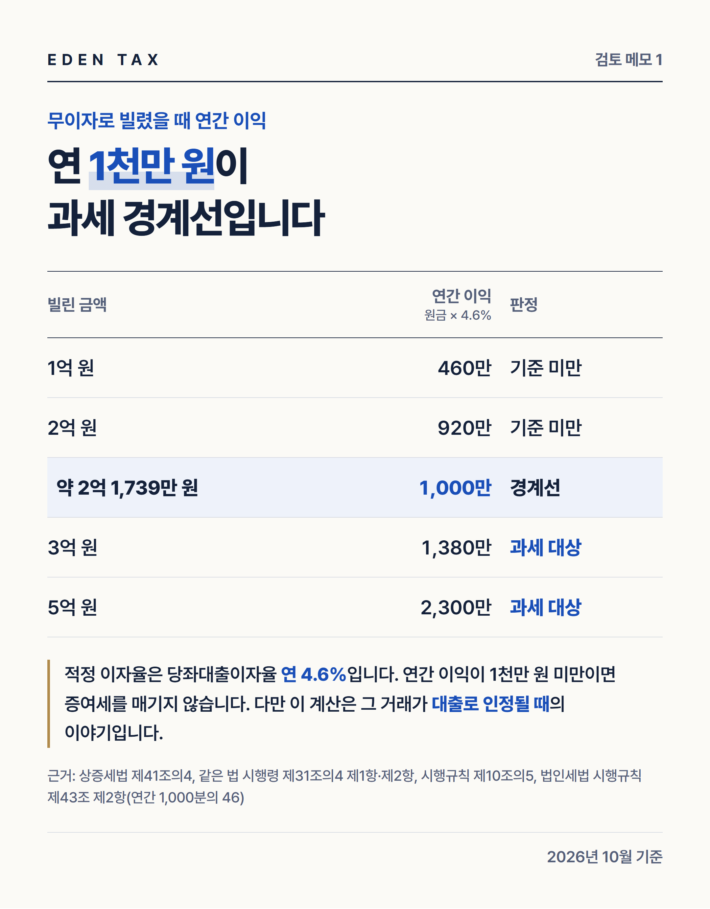
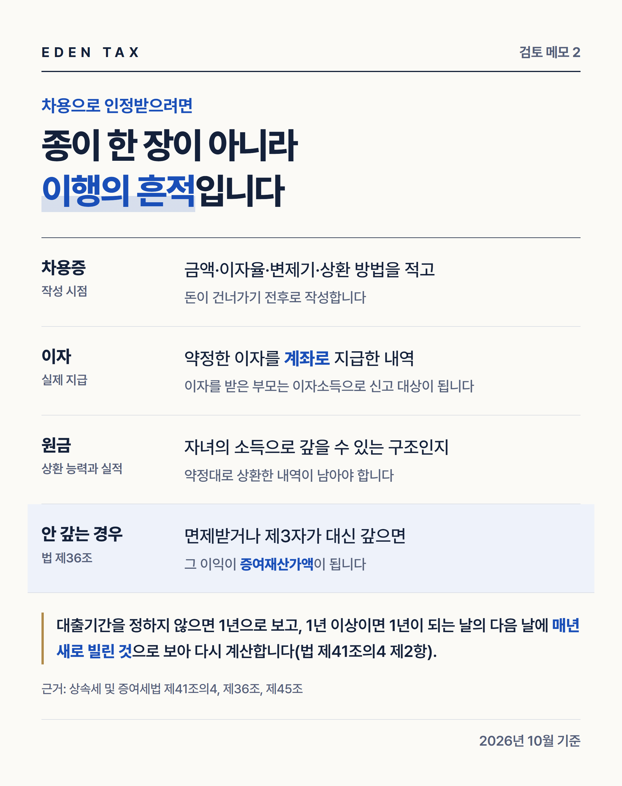

자녀에게 집값 3억 원을 보태면서 전액을 무이자로 빌려주면 해마다 1,380만 원이 증여재산가액이 됩니다. 같은 3억 원이라도 증여와 차입의 비율, 실제로 주고받는 이자에 따라 과세 판정이 달라집니다. 부모 자녀 사이의 차용을 판단하는 숫자는 연 4.6%와 연간 이익 1천만 원 두 가지이고, 대출로 인정되는지는 이행 자료로 가려집니다. (2026년 10월 기준 상속세 및 증여세법, 같은 법 시행령·시행규칙, 법인세법 시행규칙 원문)
판단 기준 한눈에 보기
| 항목 | 기준 | 근거 |
|---|---|---|
| 적정 이자율 | 연 4.6% | 시행규칙 제10조의5, 법인세법 시행규칙 제43조 제2항 |
| 무상 대출의 이익 | 대출금액 × 4.6% | 법 제41조의4 제1항 제1호 |
| 저리 대출의 이익 | 대출금액 × 4.6% − 실제 지급 이자 | 같은 항 제2호 |
| 과세 제외 | 위 금액이 1천만 원 미만 | 시행령 제31조의4 제2항 |
| 판정 주기 | 기간 미정이면 1년, 1년 이상이면 매년 새로 계산 | 법 제41조의4 제2항 |
무이자일 때 연간 이익이 1천만 원이 되는 원금은 약 2억 1,739만 원입니다. 이 금액 아래라면 이익에 대한 증여세는 나오지 않습니다. 1천만 원 이상이 되면 넘는 부분만이 아니라 계산된 이익 전체가 증여재산가액이 됩니다. 한 번의 판정으로 끝나지 않고 매년 반복되며, 적정 이자율이 개정되면 경계 금액도 달라집니다.

경계를 넘는 금액은 이자가 얼마나 필요한가
원금이 약 2억 1,739만 원을 넘어도 이자를 실제로 지급하면 이익이 줄어듭니다. 연간 이익을 1천만 원 미만으로 만들려면 아래 금액을 초과해 지급해야 합니다. 정확히 그 금액이면 이익이 1천만 원이 되어 기준 미만이 아닙니다.
| 빌린 금액 | 원금 × 4.6% | 연간 지급 이자 | 약정 이자율 환산 |
|---|---|---|---|
| 2억 5,000만 원 | 1,150만 원 | 150만 원 초과 | 연 0.6% 초과 |
| 3억 원 | 1,380만 원 | 380만 원 초과 | 연 약 1.27% 초과 |
| 4억 원 | 1,840만 원 | 840만 원 초과 | 연 2.1% 초과 |
이자를 약정했다면 계좌로 지급한 내역이 남아야 합니다. 이자를 받은 부모는 이자소득 신고 대상이 되므로 양쪽 처리가 맞아야 합니다.
3억 원을 나누는 네 가지 방법
성년 자녀가 3억 원을 지원받고, 10년 안에 직계존속에게 받은 증여가 없다고 가정한 계산입니다. 증여재산공제 5천만 원(법 제53조)은 차용과 별도로 계산합니다.
| 구성 | 공제 후 증여 금액 | 차입금의 연간 이익 | 차입금 판정 |
|---|---|---|---|
| 전액 무이자 차입 | 없음 | 1,380만 원 | 과세 대상 |
| 증여 5천만 원 + 무이자 2억 5,000만 원 | 0원 | 1,150만 원 | 과세 대상 |
| 증여 5천만 원 + 2억 5,000만 원, 연 이자 160만 원 지급 | 0원 | 990만 원 | 기준 미만 |
| 증여 1억 원 + 무이자 2억 원 | 5천만 원 | 920만 원 | 기준 미만 |
증여받은 금액은 신고해 두어야 '신고한 수증재산'으로 입증 금액에 넣을 수 있습니다. 어느 구성이든 표의 계산은 차입 부분이 대출로 인정될 때 성립합니다. 일부를 증여로 신고하고 나머지를 차용으로 정리하는 방식이 실무에서 자주 쓰이지만, 차입 부분은 자녀가 실제로 갚을 수 있는 금액이어야 합니다.
대출로 인정받기 위한 자료
상환 의사와 능력이 보이지 않으면 원금 자체가 증여로 넘어갑니다. 차용증 존재 여부보다 이행의 흔적이 중요한 이유입니다.

- 차용증: 금액, 이자율, 변제기, 상환 방법을 적고 돈이 건너가는 시점 전후로 작성합니다.
- 상환 구조: 자녀의 소득으로 갚을 수 있는 계획인지 먼저 따져 봅니다.
- 상환 실적: 약정대로 갚은 내역을 쌓아 둡니다.
- 자금 흐름: 재산 취득자금을 소명할 때 차입금은 그 재산 취득에 직접 사용한 금액이어야 합니다(시행령 제34조 제1항 제3호).
나중에 다시 확인되는 시점
| 사건 | 세법상 결과 |
|---|---|
| 부모가 채권을 포기하거나 다른 가족이 대신 갚음 | 면제·인수·변제로 인한 이익이 증여재산가액(법 제36조) |
| 부모의 상속이 개시되고 빌려준 돈이 남아 있음 | 그 채권이 상속재산 |
| 상속개시일 전 재산 종류별로 1년 내 2억 원 이상, 2년 내 5억 원 이상을 처분·인출했고 용도가 분명하지 않음 | 상속재산으로 추정(법 제15조) |
차용증 양식보다 먼저 정할 일
양식을 어디서 받을지는 중요하지 않습니다. 자녀가 실제로 갚을 수 있는지, 언제 얼마씩 갚을지, 이자를 어떻게 처리할지가 먼저입니다. 갚을 계획이 없는 돈이라면 차용증보다 증여로 신고하고 공제를 쓰는 편이 정리가 깔끔한 경우도 많습니다. 금액이 크다면 증여와 차용의 배분부터 계산해 보시기 바랍니다.
— 정재욱 세무사
에덴택스는 국세청 출신 세무사가 양도·상속·증여·취득까지 부동산 세금을 직접 봅니다. 자녀의 소득 자료, 매수 예정 금액, 기존 증여 이력을 가지고 오시면 증여와 차용의 배분부터 계산해 드립니다.
※ 2026년 10월 기준 상속세 및 증여세법, 같은 법 시행령·시행규칙, 법인세법 시행규칙 원문을 기준으로 작성한 일반적인 안내입니다. 적정 이자율은 법인세법 시행규칙 개정에 따라 달라질 수 있고, 대출로 인정되는지는 사실관계에 따라 결과가 달라집니다.
※ 본 글은 세무·부동산 분석을 위한 참고자료로, 개별 세무상담이나 신고 검토를 대체하지 않으며 투자·청약을 권유하지 않습니다. 세금 신고 및 투자 결정 전 전문가의 검토를 받으시기 바라며, 이를 활용한 판단과 결과의 책임은 이용자에게 있습니다.